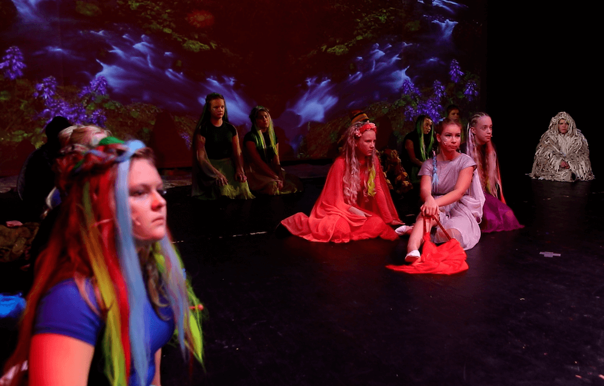
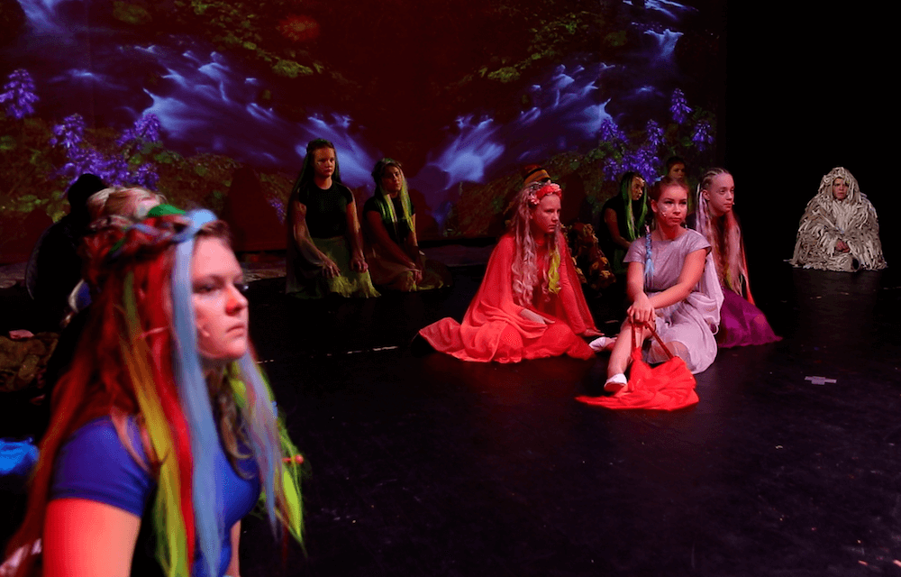
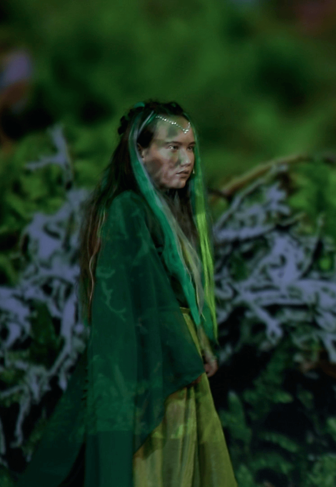
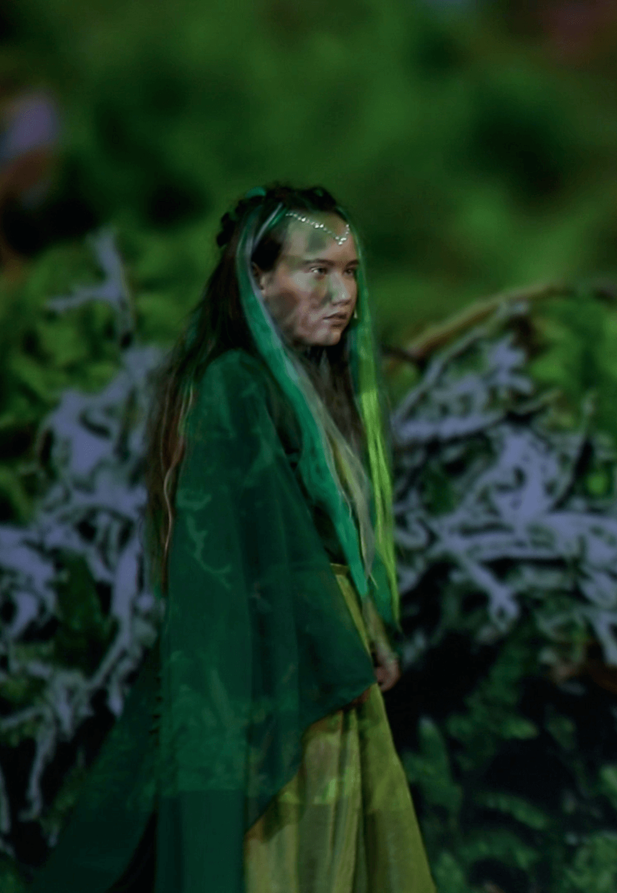

Lastemuusikal "Eksinud haljad" on lugu sõprusest, avastamisest, õppetundidest ning meeleolukatest seiklustest. Kolm iseäranis kentsakat tegelast satuvad imetabasele haldjatemaale, kus avastavad enda jaoks palju seninägematut. Üha enam võõrsil viibides, hakkab nende ees lahti hargnema haldjate maagiline maailm. Oma graatsilisuse ja kergusega võluvad haldjad kõiki, kellel on olnud võimalus nendega kohtuda. Tuleb aga ettevaatlik olla - kolmel kummalisel tegelasel on omad plaanid. Haljad annavad endast parima, et oma maad kaitsta, kuid mõtlematud teod võivad mõjuda vastupidiselt…
OSATÄITJAD:
Kummalised Kujud haldjariigis: Mikk Kaasik, Kaspar Kiisk, Henri Soidla
Peahaldjas: Eliisa Klimušev
Puuhaldjas: Agathe Ojasaar
Puud: Cärolyn Žuravljov, Emily Susanna Knotts, Hanna-Mari Semjonov, Kelly Lääne, Liisa Tämm, Maria Tihhanovski, Mari-Liis Kirs, Viktoria Erik
Tulehaldjas: Reneli Husu
Tuulehaldjas: Emily Mäesepp
Tuul: Kaur Merisalu
Veehaldjad: Elis Tallmeister, Eva Lota Rajamäe-Volmer, Hellemai Haamer, Kristin Põder
Vikerkaarehaldjad: Annabret Albert, Meribel Võimre
Uduhaldjad: Hanna-Brit Rumm, Marii Häling
Lillehaldjad: Lee Holm, Marian Pärn, Stella Seim
Lilled: Aliise-Gea Vares, Annabelle Ats, Brenda Regiina Reinaru, Eliisa Suburg, Eliise Veiksalu, Grete Hein, Isaura Merilo, Joanna Voltri, Marie Aliise Bettler, Saara Podekrat
Samblahaldjad: Eliisa Ainomäe, Elo Esperk, Grete Konsap, Keissi Päevalill
Seened: Agnessa-Merliina Kilk, Andris Konts, Elisabeth Haossar, Karel Kurvits, Katarina Haossar, Kirsika Kadriann Pütsep, Lemme Toompere, Lenna Kiisk, Liisa Jaagusoo, Liselle Korela, Lisete Merilo, Mattias Kaur, Merry Merileid Rytberg, Ross Nõmme, Stiina Türk
Stsenarist, lavastaja ja autor: Heli Ruus
Laulude autor: Ingrid Otti, Sirje Toompere, Mikk Kaasik
Koreograaf: Triin Põder, Kristin Põder
Fonogrammid: Aare Varusk, Elmet Neumann, Ingrid Otti, Silja Peedo
Kujundus: Kerli Otti, Janika Merilo
Muusikali koduleht: Kerli Otti, Irene Russak, Eva Ibrus
Tehnikud: Kert Otti, Mats Sonn
Helitehnik: Lauri Kool
19. novembril 2018 said Tartu koolilapsed ja linnaelanikud vaadata Vanemuise laval uut lastemuusikali “Eksinud haldjad”. Huumoriga põimitud kaasahaarav lugu oli õpetlik ja vaatemänguline. Paraja portsu nalja ning tantsu saatel kõlasid imelised uue laulud ja rullus lahti salapärane haldjate maailm oma imelise looduse ja valitseva harmooniaga.
Seiklused algasid koos kummaliste tegelastega, kes haldjametsas varandust otsides kimbatusse sattusid ja olid sunnitud otsima vastuseid nii mõnelegi olulisele keskkonda puudutavale küsimusele. Etendusest õhkas loodussõbralikkust igasse saali nurka ja pani pealtvaatajad jutustatud looga kaasa mõtlema.
Lastemuusikal “Eksinud haldjad” on üsna ainulaadne, kuna on kirjutatud originaalloominguna (nii tekstid kui ka muusika) just laulustuudios õppivatele noortele. “Peame väga oluliseks seda, et laulustuudios osalejad saaksid väärtuslikke lavakogemusi ja võimalusi näidata oma oskusi suuremale publikule. Meie laululapsed on väga töökad ja pühendunud ning tänu sellel on meil võimalik pakkuda meelejäävaid muusikaelamuse kõigile, kes meid vaatama tulevad,” sõnab laulustuudio eestvedaja, Ingrid Otti.
Suure hoole ja südamega loodud muusikali saab taas laval näha järgmisel aastal. Täpsemad toimumisajad ja kohad avaldatakse Laulustuudio Fa-diees kodulehel www.fa-diees.ee.
 


 
